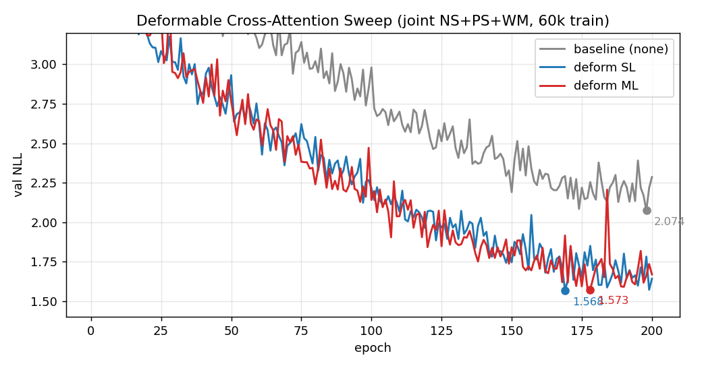

Deformable Cross-Attention
でさらに NLL を改善する
Extrinsic calibration は要するに「3D 点が画像のどの画素に対応するか」の オフセットを見るタスク。その形に素直に合う multi-scale deformable attention を cross-attn に入れ替え、 前報 で止まっていた val NLL 2.074 → 1.568（−24.4%）を達成。 計算量はリアルタイム推論を見越してひたすら小さく保つ — dense の O(HW) を O(N=4) に削ぎ、DINO 由来の kernel (fp32 のみ) に bf16 dispatch を追加実装して RTX 5080 の bf16-native 実行に載せ、 ベースラインと同速 (19.3 vs 19.5 ms/iter) を維持した。
動機: データ側は頭打ち
前報で all_v2 → all_v3_mc（マルチクロップ + NS/PS/WM 合同）の
データ改善が val NLL を 21.7% 削ったが、この 2.074 あたりで
どう訓練データを足しても下がらなくなった。学習の律速が
"どこを見るか" の探索に移っている、という読みで
cross-attn ブロックに手を入れる。
deformable attention ってなに？（初心者向け）
元の cross-attention は何をしている？
クエリ 1 個（= 点群の 1 点）に対して、画像特徴を H×W 個のトークンに
並べて、全トークンと内積を取り、softmax で重み
α ∈ [0,1]HW を作り、重み付き和で 1 本の出力を出す。
これが普通の dense cross-attn。画像の「どの画素が重要か」を
α として学習する余地が大きい反面、問題が 2 つある:
- ① 計算量が H·W に比例する — 高解像度で爆発する。 DETR (Carion 2020) が multi-scale feature map を使えなかった原因のひとつ。
- ② 収束が遅い — 学習初期は α がほぼ一様分布に近く、 「どこを見るか」を softmax の分布として削り出していく必要がある。 DETR が 500 epoch 要した一番の原因はこれ。
deformable attention のアイディア
Deformable DETR (Zhu 2021) はこの 2 問題を一発で解く:
- クエリ自身から "見に行くべき位置" のオフセット Δᵢ を N=4 個、MLP で直接回帰させる。
-
reference point (= クエリの自分の
(u₀, v₀)) に Δᵢ を足した たった 4 箇所で画像特徴をバイリニアサンプル。 -
4 個のサンプル値を、別 MLP で出した重み
aᵢ (Σaᵢ=1)で 加重和して出力。
つまり 「どこを見るか」を attention score の確率分布 α ではなく、 直接 2D 座標 Δᵢ として回帰する。これで:
- ① 計算量 O(HW) → O(N)。HW=256 / 1024 → N=4 なので 2 桁減。
-
② 収束が速い。初期化で Δᵢ は放射状 4 点に置かれ
（参考実装
の
_reset_parameters）、学習初期から 「どこを見るか」の座標空間で最適化が進む。 softmax を尖らせる epoch が要らない。
"視野が狭い" と "広すぎる" を両立
"N=4 しか見ない" と聞くと CNN のような局所窓と同じに見えるが、Δᵢ は
normalized coord [0,1]² の任意の位置を取れるので、
画像のどこでもサンプルできる。つまり CNN の局所性に縛られない
大域的な受容野を、attention の二次コストなしで持てるのが肝。
先祖の Deformable Convolution
(Dai 2017) が conv に
学習可能オフセットを足してスケール変化・変形に適応させたのと同じ発想を、
attention に持ち込んだのが deformable attention。
本タスクとの相性
Extrinsic calibration は結局 「3D 点が画像のどの画素に対応すべきか」を当てる問題。 正解の画素は一箇所なので、全画素で softmax する dense cross-attn は 無駄が多い。一方 deformable attention の Δᵢ は 「見るべき画素へのオフセット」そのもので、タスクの定義と inductive bias が直接重なる。これが後半の ablation で 2.07 の壁を 抜ける土台になっている。
機構
実装
Deformable-DETR
(DINO 系) 公式の MSDeformAttn CUDA kernel は
fp32 専用で、bf16 autocast の中に置くと autocast が
fp32 キャストを差し込み、そこだけで前後のバッファ転送が走って遅くなる。
ops/src/*.cu を AT_DISPATCH_FLOATING_TYPES_AND2
(fp32 / fp16 / bf16) に書き換え、atomic 演算も
gpuAtomicAdd 版に差し替えた。RTX 5080 は bf16 の
tensor-core path を持っているので、
autocast 内でも fp32 キャストなしで kernel 直叩きできる。
結果ベースラインと同速 (19.3 vs 19.5 ms/iter)。
3 モード
deform_mode = 'none' # 旧 CrossAttentionBlockCov（ベースライン）
deform_mode = 'sl' # 単一レベル: 各ブロックが 1 レベル (coarse or fine)
# を N=4 点でサンプル
deform_mode = 'ml' # 多レベル: 各ブロックが coarse+fine 両方を
# N=4 点ずつ + 学習可能な level embedding
ML モード追加パラメータは level_embed = nn.Parameter(zeros(2, D))
の ≈512 個のみ。
ablation: 学習曲線

| Model | val NLL (total) | val NLL (obj) | val NLL (bg) | 相対 Δ (total) | iter (ms) |
|---|---|---|---|---|---|
| baseline (none) | 2.074 | 1.064 | 2.127 | — | 19.5 |
| deform-SL | 1.568 | 0.610 | 1.616 | −24.4% | 19.3 |
| deform-ML | 1.573 | 0.571 | 1.625 | −24.2% | 19.3 |
- SL/ML どちらも約 −0.5 NLL。データ側では動かなかった 2.07 の壁を一発で抜けた。
- obj NLL の改善幅 (1.064 → 0.57/0.61) が bg (2.13 → 1.62) より大きい — 前景物体の位置推定こそ 「オフセット探索」が素直に効く場所、という機構 (Fig 1) の読みと整合。
- SL と ML はほぼ同点。ML の複雑化はこの設定では元が取れない。 N=4×2 level の表現力は N=4×1 level を 2 ブロックかける 構成 (SL) とほぼ等価。
- bf16 カーネルのおかげで速度はベースラインと同等 (19.3 vs 19.5 ms/iter)。
躓いた箇所
n_layers≥3 の時のブロック実行順が
崩れ、cross_fine と cross_refine が feature レベルを
取り違えるバグを混入。pre-refactor の all_v3_mc ckpt を
load_state_dict で読み込むと silently mis-wired になる。
→ 4517107/45b9fcb で
coarse → refine → fine → fine2 順を復元。deform 訓練済み重みも
壊さないよう deform_mode で条件化して共存。
再現
# sweep (SL + ML を並列で)
python scripts/training/train_deform_sweep.py
# ベースライン (deform_mode='none')
python scripts/training/train_all_v2_mc.py次のステップ
- BA 下流の再評価 — deform ckpt を通した
ba_kb_multiframeが未収束（モデル側の軸合わせ issue）。 原因特定して再計測。本レポートでは訓練指標のみを報告。 - N_points スイープ — N=4 固定。N=2 / 8 で粒度 vs overfitting のトレードオフを見る。obj NLL がさらに下がる可能性あり。
- Sampling offset の可視化 — 学習後に Δᵢ(q, image) が実際どこを指しているかを出す。 Fig 1 で描いた模式図が実測で何に対応しているか確認。
- Gaussian-query 残差ネットへ流用 — patch-warp 案に接続し、3D primitive (surfel / gaussian) から (Δu, Δv, Σ) を出す一般化残差ヘッドに移植。
models/model_deform.py ·
models/model_depth.py ·
ops/ (bf16 MSDeformAttn kernel) ·
scripts/training/train_deform_sweep.py ·
experiments/vdef_{sl,ml}/